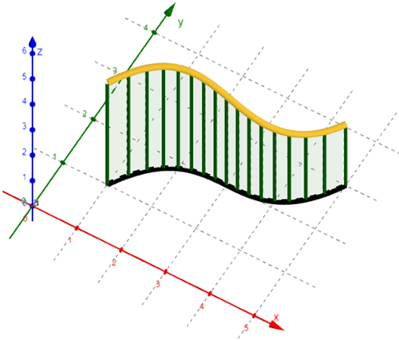
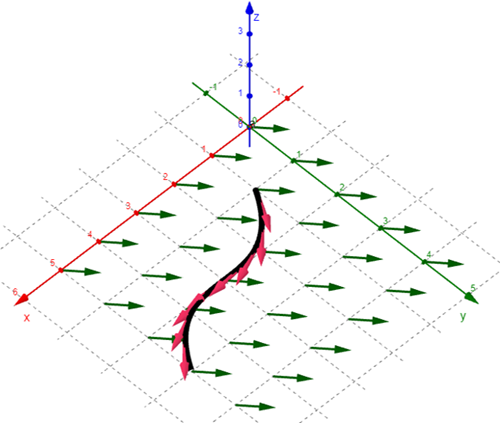

On this page, you will learn to:
- Setup and evaluate line integrals of scalar functions and vector fields over smooth curves.
- Compute the work done by a vector field.
Before getting into line integrals, let's first review how we can parameterize a curve. In other words, how can we define a function or curve in \(\mathbb{R}^2\) or \(\mathbb{R}^3\) using a vector function where its components are continuous functions of a single parameter? Mathematically, we are looking for something like \(\vec{F} = \langle x(t), y(t), z(t) \rangle\).
We will often see problems that involve parameterizations using linear functions or using a given function. For linear parameterizations, we can use the vector linear function \(\vec{r}(t) = \vec{r}_0 + \vec{v}t\) where \(\vec{r}_0\) is the initial position vector and \(\vec{v}\) is sthe direction vector. If instead we are given some function, think \(y = f(x)\) in \(\mathbb{R}^2\), then we could use the parameterization \(\vec{r}(t) = \langle t, f(t) \rangle\).
Now that we have discussed how to parameterize a curve, we can move on to line integrals. The first thing you need to know is that we can explore line integrals over two different types of functions, scalar functions and over vector fields. A scalar function is any function of the form \(y = f(x)\) or \(z = f(x,y)\), where the output is a scalar value for every point in the domain of the function. A vector field is any function of the form \(\vec{F}(x,y)\) where the ouput is a vector for every point in the domain of the function.
Scalar Functions
We say a function or curve is smooth if it has no sharp corners or cusps, which means it is differentiable at every point within its domain. A parameterized curve \(\vec{r}(t)\) is smooth if \(\vec{r}'(t)\) is continuous and \(\vec{r}'(t) \ne 0\). If an entire curve is not smooth but it can be broken down into a finite number of smaller smooth curves, then we say it is piecewise smooth.
Recall in Calculus 1 how we defined a definite integral as the sum of infinitely many rectangles of height \(f(x)\) and width \(dx\) under a curve along the \(x\)-axis, or a summation of areas computed by \(f(x) dx\). A line integral of a scalar function is basically the same idea, but we are not bound to just integrate along the \(x\)-axis. We want to follow any curve \(C\) in the \(xy\)-plane. This is illustrated in the image below.

In the illustration above, the black curve in the \(xy\)-plane is the path or curve \(C\) along which we want to integrate. The yellow curve above it is all the points of the function \(z = f(x,y)\) that lie above \(C\). The line integral can intuitively be defined as the area under this curve which is represented as a series of rectangles standing vertically along \(C\). The height of each rectangle is determined by the height of the function at some point of the rectangle, \(h = f(x,y)\), and the width of each rectangle can be computed by the differential of the arc length, \(w = \Delta s = ds\). Thus the area of each rectangle is \(A = hw = f(x,y) ds\) and the total area would be the sum of all of the rectangular areas, or \(\int_{C} f(x,y) ds\).
For a scalar function \(f\) that is continuous along a (piecewise) smooth curve \(C\) in \(\mathbb{R}^2\) defined by \(\vec{r}(t) = \langle x(t),y(t) \rangle\) for \(a \le t \le b\), the line integral of \(f\) over \(C\) is defined by the formula below.
\[\underset{C}{\mathop \int} \, f(x,y) \, ds = \int_{a}^{b} \, f(x(t),y(t)) \, \vert \vec{r}'(t) \vert \, dt\]This definition can easily be extended into \(\mathbb{R}^3\) given a function \(f(x,y,z)\) and a parameterized curve \(\vec{r}(t) = \langle x(t),y(t),z(t) \rangle\). Also, you may hear line integrals called "path" integrals as well, where \(C\) is the path.
The left side of this formula gives the more technical definition of a line integral as the integration of the function \(f\) along the curve \(C\) with respect to its arc length, \(ds\). This means \(\vec{r}\) is parameterized by its arc length, or \(\vec{r}(s)\). This arc length parameterization is required for a uniform incremental summation along the curve \(C\). However, parameterizing a curve by its arc length is not always easy or the best method. The right side of the above formula gives the more practical expression of a line integral because it allows us to use any parameterization \(\vec{r}(t)\) of \(C\). So, we will typically evaluate line integrals by integrating with respect to \(t\), or using \(dt\). The key to connecting these two integrals comes from the differential relationship \(ds = |\vec{r}'(t)| \, dt\).
Vector Fields
Now let's consider line integrals over curves in vector fields. Instead of thinking about the area under the curve, we want to look at the relationship between the flow of the field and the direction of the curve, which can be measured using the dot product of the vector field with the unit tangent vector of the curve at every point along the curve using infinitely small steps measured by the arc length.

In the illustration above, we have a curve and its unit tangent vectors shown at regular intervals, all of which is contained within a vector field in the \(xy\)-plane. We are going to define the line integral as the summation of the \(\vec{T} \cdot \vec{F} \, ds\) values at every point along the curve.
For a vector field \(\vec{F}\) that is continuous over a (piecewise) smooth curve \(C\) defined by \(\vec{r}(t) = \langle x(t),y(t) \rangle\) for \(a \le t \le b\) with unit tangent vector \(\vec{T}\), the line integral of \(\vec{F}\) over \(C\) is defined by the formula below.
\[\underset{C}{\mathop \int} \, \vec{F} \cdot \vec{T} \, ds = \underset{C}{\mathop \int} \, \vec{F} \cdot \, d\vec{r} = \int_{a}^{b} \, \vec{F}(\vec{r}(t)) \cdot \vec{r}'(t) \, dt\]Given a vector field \(\vec{F} = \langle P,Q \rangle\) with continuous functions \(P\) and \(Q\) and \(\vec{r}'(t) dt = \langle dx, dy\), we can rewrite the line integral using the formula below.
\[\underset{C}{\mathop \int} \, \vec{F} \cdot \, d\vec{r} = \underset{C}{\mathop \int} \, P \, dx + Q \, dy\]This can all be easily extended into \(\mathbb{R}^3\) given a function \(\vec{F} = \langle P,Q,R \rangle\) and a parameterized curve \(\vec{r}(t) = \langle x(t),y(t),z(t) \rangle\).
The left side of the definition formula above gives the more technical definition of a line integral of a vector field as the integration of the tangential component of the field along the curve with respect to its arc length. We typically express the line integral using the middle part of the formula, \(\int_{C} \, \vec{F} \cdot \, d\vec{r}\), which is the result of substituting \(ds = |\vec{r}'(t)| \, dt\), then \(\vec{T} = \frac{\vec{r}'(t)}{|\vec{r}'(t)|}\), and lastly \(d\vec{r} = \vec{r}'(t) \, dt\).
\[\vec{T} \, ds = \vec{T} \, |\vec{r}'(t)| \, dt = \frac{\vec{r}'(t)}{|\vec{r}'(t)|} \, |\vec{r}'(t)| \, dt = \vec{r}'(t) \, dt = d\vec{r}\]The right side of the formula gives the more practical expression for how we actually compute the line integral using any parameterization of the curve.
A common application of line integrals over a vector field is computing the work done by the vector field as an object moves along a path. The following video demonstrates how we can compute the work done by a vector field in 3D space.